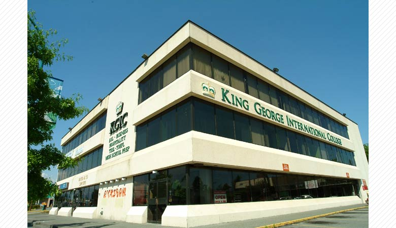

KGIC/KGIBC-CTCは1996年にBC州サレーにて創立され、
現在はバンクーバーに、サレー、トロント、ビクトリア、ハリファックスキャンパスを持つ語学・専門学校です。

KGICはキャリアアップを行いたい方、留学にて就職を有利にしたい方、英語環境にて仕事をしたい方に最適な学校です。
留学やワーホリにてよりハイレベルな英語力の取得、英語にて仕事を行うスキルの養成、
そして帰国後のキャリアアップにつなげる数多くのプログラムが開講されています。

KGICのESLプログラム（一般英語）は正確な英語を学習する上で最も重要な「読む・書く・聞く・話す」を徹底的に学習します。

レベル分けもユニークな科目ごとにレベル分け制度、「文法、リーディング＆ライティング、リスニング、コミュニケーション＆発音」の
４つのクラスを、それぞれでレベル評価するために、弱点の強化がしっかりとでき、しっかりとした基礎を築くことができます。
KGICで行っているPMM（スピーキング強化プログラム）では、徹底的に英語でのプレゼンテーション力の向上を行います。
英語で仕事面接では、英語で自分をプレゼンしなければなりません。
PMMで抜群のプレゼン力を身に着け、英語での仕事をＧＥＴしよう！
≪専門プログラムを受講する！≫
専門プログラムの受講により、英語で仕事を行うスキルを身に付け、
ワーホリでの仕事、帰国後の仕事を飛躍のキャリアを手にすることができます。

≪インターンシップをする≫
KGICでは短期間から体験できる多くのインターンシッププログラムを数多く開講しています。ビジネス英語プログラムでは、
8週間のビジネス英語学習の後に、4週間のインターンシップを行うことができます。
≪ジョブワークショップ ～カナダ仕事探しセミナー～≫
KGICでは定期的に「JOB WORK SHOP」を開催しています。
ワーホリ学生、インターンシップ希望学生、帰国後外資系に就職希望の方へ最適のセミナーです。